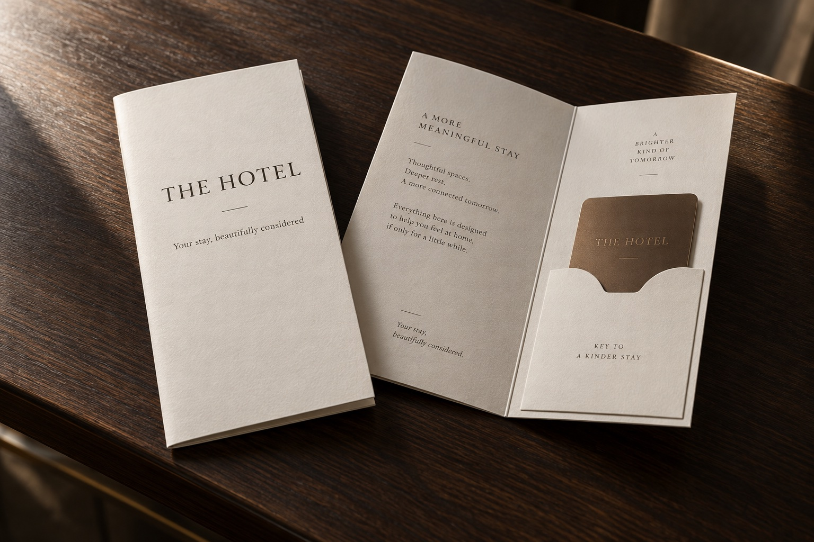

Good for nearby businesses
Discover here. Go there.
The printed guide makes the introduction. The live guide helps a guest take the next step, whether that is directions, a call or a reservation.
Oh, and we have digital.
The Pocket Guide gives guests something worth exploring. When they want directions, a booking, an offer or a little more information, they scan and keep going.
No app. No login. Nothing to download.
See how it works
Made to be held
A physical guide feels deliberate. It can sit on the bedside table, travel in a pocket and invite a guest to look beyond their room.
Digital should not replace the guide. It should make it more useful.Useful in the moment
When a guest is ready to act, the live guide puts the next step within reach.
Discovery in their hands. Action on their phone.
No instructions required
No account. No password. No App Store. No onboarding. One scan takes the guest from something they have discovered to something they can do.
Keep print calm
The Pocket Guide holds the ideas that deserve time and attention. It stays simple, beautiful and easy to browse.
Keep the rest live
Details that change, or help someone act, stay current online without crowding the printed page.
From discovery to doing
A guest notices somewhere special in the guide, scans for the details, then puts their phone away and goes.

One considered experience
The live guide continues the look, tone and recommendations of the Pocket Guide. It feels like a natural part of the stay, with Strictons quietly behind it.
One experience, across two formats.Kept current by us
We build the live guide, manage it and keep the details current. When opening hours, menus, offers, links or experiences change, the guide can change with them.
We look after the guide, so your team can look after the guest.Good for nearby businesses
The printed guide makes the introduction. The live guide helps a guest take the next step, whether that is directions, a call or a reservation.
Structured for discovery
Hotel information and local recommendations are organised clearly and connected thoughtfully, so they remain useful as the way people search continues to change.

A successful digital guide
It has done its job when the phone goes away and the guest steps into the restaurant, the spa, the gallery, the beach or somewhere they had not planned to find.
The destination is the point. Not the screen.A useful signal
Each scan shows that a guest wanted to know more. It does not pretend to be a booking or claim credit for the experience. It is simply a clearer view of what caught their attention.
Physical first. Live when useful.
A Pocket Guide they will want to pick up, with a live guide ready whenever curiosity turns into action.